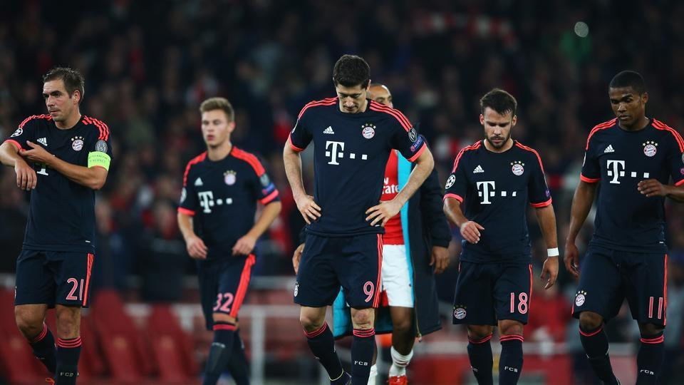

Amazing news coming from the Alianz Arena as The Arsenal Football club have finally lifted the Champions league.This has come as shock to many as the touted favourites were blown away by the boys from north london.Precision passing was the order of the day as both teams were comfortable to keep hold of the ball.But as mother luck would have it,The boys from london managed to scrape at the death;as the solitary goal from Olivier Giroud ended a century of hurt for this club.
